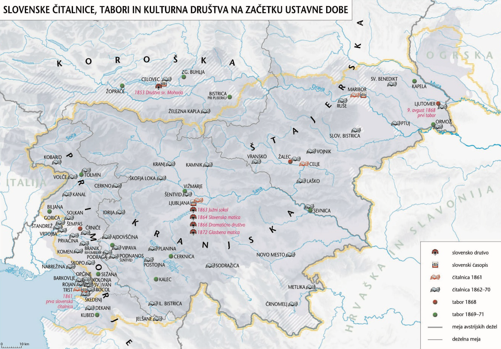
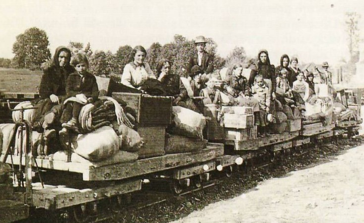
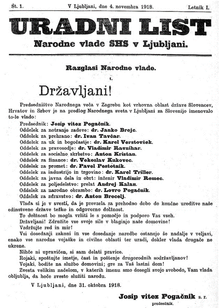
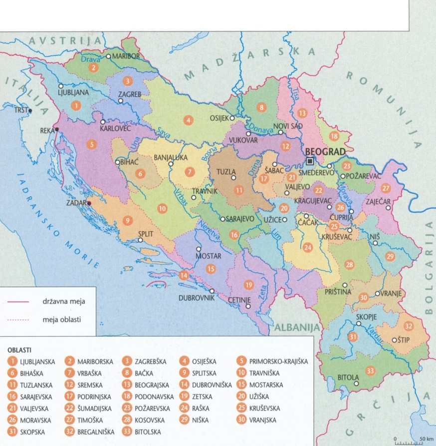
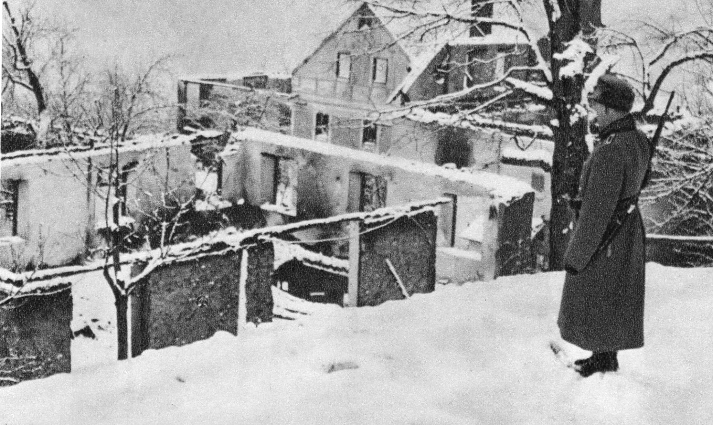
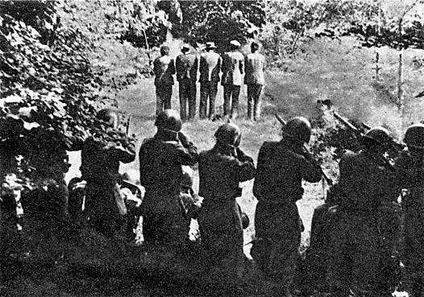
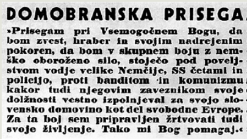
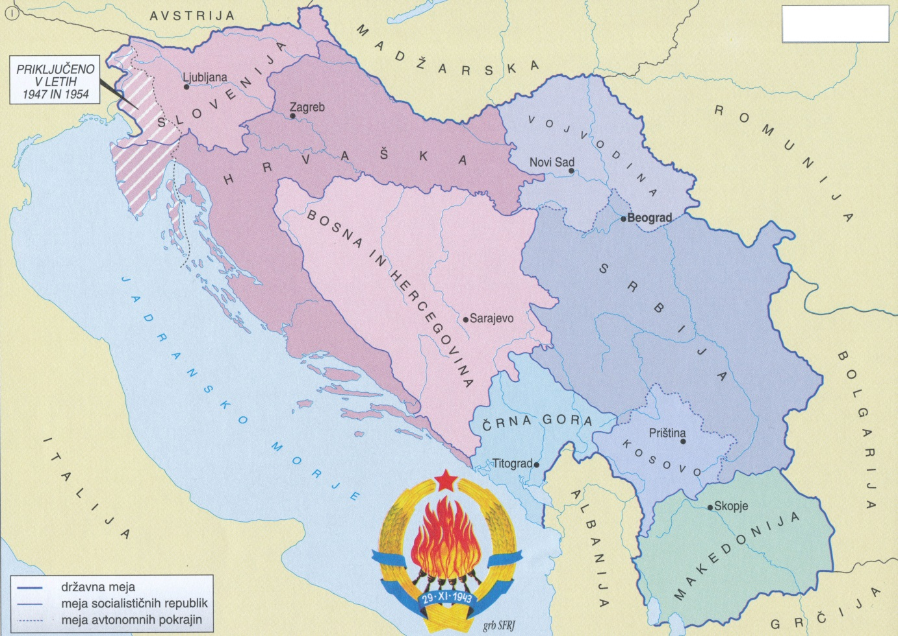
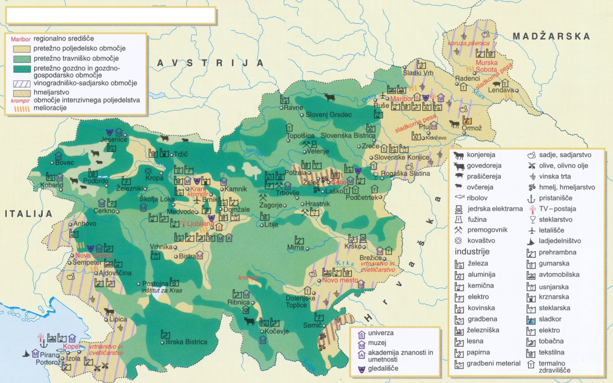

Slovensko nacionalno preoblikovanje
1
V Habsburški monarhiji je po neuspehu revolucij leta
1848 nastopilo obdobje neoabsolutizma, imenovano tudi
Bachov absolutizem. Obkrožite črko pred tremi pravilnimi
trditvami, ki se navezujejo na to obdobje.
3 točke
A – Slovensko narodno gibanje je s političnega
prešlo na kulturno področje.
B – Večinsko slovensko kmečko prebivalstvo je
bilo narodno zavedno.
C – Kljub cenzuri so izhajali različni slovenski
politični časopisi.
D – V deželah z večinskim slovenskim
prebivalstvom je v upravi prevladovala
slovenščina.
E – Vlada je izdajala uradni list tudi v
slovenščini.
F – V gospodarstvu se je uveljavil liberalizem.
2
Po koncu Bachovega absolutizma in obnovi ustavnega
življenja se je slovensko kulturno in politično
življenje odvijalo v čitalnicah, razvijala so se narodna
društva. Pri reševanju si pomagajte s sliko 6 v barvni
prilogi.
3 točke

2.1
Katero slovensko društvo je bilo ustanovljeno že v
času Bachovega absolutizma?
Rešitev
Društvo sv. Mohorja / Mohorjeva družba (v
Celovcu)
2.2
V katerih štirih mestih so bile leta 1861
ustanovljene prve slovenske čitalnice?
Rešitev
Trst, Ljubljana, Maribor, Celje
2.3
Pojasnite pomen čitalnic.
Rešitev (dve od)
- Čitalnice so razvijale slovensko narodno zavest.
- Čitalnice so razvijale slovensko kulturo.
- V čitalnicah so prirejali kulturne prireditve / besede.
- Čitalnice so uveljavljale uporabo slovenščine v kulturni ustvarjalnosti.
- Čitalnice so bile središče slovenske politične agitacije.
3
Povežite slovenska narodna društva s področjem
njihovega delovanja tako, da na črto pred imenom društva
vpišete ustrezno črko iz desnega stolpca.
2 točki
| Društvo | Področje delovanja |
|---|---|
| Dramatično društvo | D – uprizarjanje gledaliških predstav v slovenščini |
| Južni Sokol | C – narodno-obrambno telovadno društvo |
| Glasbena matica | B – razvijanje slovenske glasbene kulture |
| Slovenska matica | A – izdajanje znanstvenih in leposlovnih del v slovenščini |
Za štiri pravilne rešitve 2 točki, za tri ali dve 1
točka.
4
Konec šestdesetih let 19. stoletja se je razmahnilo
taborsko gibanje. Pri reševanju si pomagajte z besedilom
in s sliko 6 v barvni prilogi.
3 točke
Na taboru v Žalcu leta 1868 je Valentih Zarnik
udeležence nagovoril z besedami:
Zemlja slovenska, na kateri bivamo, je zemlja sveta. Zadnji ostanek namreč le je več onega velicega slovenskega posestva, ktero se je nekdaj raztezalo čez Gradec, Dunaj, Tirole, itd. kterega pa smo izgubili dve tretjini, tako da imamo zdaj svojo granico že pri Muri. Zadnji, sveti ostanek je torej, kar še imamo, držati ga moramo z vsemi močmi, da ne bodo nekdaj naši otroci rekli: Naši očetje so nam zapravili lepo deželo … Vir: Cvirn, J., Studen, A., 2010: Zgodovina 3, str. 139. DZS. Ljubljana
Zemlja slovenska, na kateri bivamo, je zemlja sveta. Zadnji ostanek namreč le je več onega velicega slovenskega posestva, ktero se je nekdaj raztezalo čez Gradec, Dunaj, Tirole, itd. kterega pa smo izgubili dve tretjini, tako da imamo zdaj svojo granico že pri Muri. Zadnji, sveti ostanek je torej, kar še imamo, držati ga moramo z vsemi močmi, da ne bodo nekdaj naši otroci rekli: Naši očetje so nam zapravili lepo deželo … Vir: Cvirn, J., Studen, A., 2010: Zgodovina 3, str. 139. DZS. Ljubljana
4.1
Navedite zahteve taborskega gibanja.
Rešitev (dve od)
- Združitev vsega slovenskega ozemlja / zahteva po Zedinjeni Sloveniji.
- Enakopravnost slovenščine v šolah / uradih / javnem življenju.
- Ustanovitev novih slovenskih šol / univerze.
- Ureditev gospodarskih in socialnih vprašanj.
- Povezovanje s Hrvati.
4.2
V katerem delu slovenskega etničnega ozemlja je bilo
organiziranih največ taborov?
Rešitev (ena od)
Na Primorskem / v Primorju / na zahodu
slovenskega ozemlja / na obrobju etničnega
ozemlja.
4.3
Pojasnite, zakaj je taborsko gibanje kmalu zamrlo.
Rešitev (ena od)
- Oblasti so prepovedale tabore.
- Tabori so zamrli zaradi nasprotij med mladoslovenci in staroslovenci.
- Staroslovenci so bili previdni, mladoslovenci pa so zahtevali radikalizacijo narodne politike.
5
Konec 19. stoletja je začela katoliška Cerkev čedalje
bolj posegati v politično življenje. Težnje po katoliški
prenovi je najbolj zaostril goriški profesor bogoslovja
Anton Mahnič. Pojasnite, kako se je Mahničev poziv k
»ločitvi duhov« odrazil v slovenskem političnem
življenju.
1 točka
Pozval je k »ločitvi duhov« ter od književnosti in
umetnosti zahteval, naj se namesto slikanja »golega
življenja« in stvarnosti posvetita upodabljanju
»krščanske čeznaravne lepote« in razodevanju božje
resnice. /…/ V politiki je zavračal vsako sodelovanje z
nekatoliškimi skupinami, posebej z liberalnimi.
Vir: Vodopivec, P., 2006: Od Pohlinove slovnice do
samostojne države: slovenska zgodovina od konca 18.
stoletja do konca 20. stoletja, str. 108. Modrijan.
Ljubljana
Rešitev (ena od)
- Ni bilo sodelovanja med katoliškimi in nekatoliškimi / liberalnimi skupinami.
- Narodna stranka je razpadla na katoliško in liberalno stranko.
- Nastale so politične stranke različnih svetovnonazorskih usmeritev.
6
V devetdesetih letih 19. stoletja so nastale moderne
slovenske politične stranke. Povežite politične stranke
z njihovimi voditelji tako, da na črto pred imenom
voditelja vpišete ustrezno črko.
1 točka
| Voditelj | Stranka |
|---|---|
| Etbin Kristan | A – Jugoslovanska socialdemokratska stranka |
| Ivan Tavčar | C – Narodnonapredna stranka |
| Ivan Šušteršič | B – Katoliška narodna stranka (SLS) |
Za tri pravilne rešitve 1 točka.
7
V začetku 20. stoletja se je krepila jugoslovanska
ideja. Pojasnite odnos zagovornikov koncepta do rešitve
jugoslovanskega vprašanja.
2 točki
| Trialistični koncept | Koncept preporodovcev |
|---|---|
| Je predvideval oblikovanje južnoslovanske državne enote v okviru monarhije (z enakim statusom, kot sta ga imeli Avstrija in Ogrska) / Zagovorniki trializma so videli rešitev jugoslovanskega vprašanja v okviru Avstro-Ogrske. | Preporodovci so videli rešitev jugoslovanskega vprašanja v ustanovitvi samostojne jugoslovanske države zunaj Avstro-Ogrske / v uničenju Avstro-Ogrske. |
8
V 19. stoletju je slovensko ozemlje zajela
industrializacija, velike gospodarske spremembe je
prinesel razvoj železniškega omrežja.
2 točki
Navdušenje nad železnico je bilo tako nesporno in
soglasno očitno le na površju. Posamezniki so se namreč
prav dobro zavedali, da bo železnica povzročila globoke
in celo nepredvidljive socialne in gospodarske
spremembe, ki utegnejo imeti zelo različne in
nasprotujoče si posledice. Nekaterim je bilo že od vsega
začetka jasno, da nove prometne povezave ne obetajo samo
novih tržnih možnosti za domačo produkcijo, ampak da
bodo na domačem tržišču povzročile tudi okrepljeno
tekmovanje s tujim blagom. Veliko zaskrbljenost in
nezaupanje je železnica povzročila med kmečkim
prebivalstvom in obrtniki, zlasti med prevozniki ali
furmani in splavarji /…/
Vir: Slovenska novejša zgodovina: od programa
Zedinjena Slovenija do mednarodnega priznanja
Republike Slovenije, 1848–1992, str. 87. Inštitut za
novejšo zgodovino, Mladinska knjiga. Ljubljana,
2006
8.1
Pojasnite posledice razvoja železniškega omrežja za
gospodarstvo.
Rešitev (tri od)
- Odpirale so se nove možnosti za domačo produkcijo.
- Na tržišču se je okrepila tuja konkurenca.
- Stari prevozniki (furmani, splavarji) so izgubili večino zaslužka.
- Železnica je omogočila hitrejši transport blaga.
- Naraščala je trgovina.
- Ob železnici so nastajali industrijski obrati.
- Manufakture / obrti zunaj železniškega omrežja so propadale.
- Odpirala so se nova delovna mesta.
8.2
Opišite demografsko posledico industrializacije za
urbana naselja.
Rešitev (ena od)
- Povečalo se je priseljevanje v mesta (s podeželja).
- Na obrobju mest so nastajale delavske kolonije.
- Prebivalstvo je hitreje naraščalo v mestih ob železnicah.
9
Konec 19. stoletja je slovenske dežele zajel val
izseljevanja.
2 točki
Posledica zadolženosti in drobitve kmetij je bila
proletarizacija slovenskega podeželja in beg z vasi
oziroma veliko izseljevanje. Migracijski tok se je
usmeril predvsem v tujino, v razne evropske države in
Ameriko, zlasti Združene države, ker domača industrija
ni bila toliko razvita, da bi lahko zaposlila
prebivalstvo na slovenskih tleh.
Vir: Lazarević, Ž., 1994: Kmečki dolgovi na
Slovenskem: socialno-ekonomski vidiki zadolženosti
slovenskih kmetov 1848–1948, str. 19. Znanstveno in
publicistično središče. Ljubljana
9.1
Navedite štiri vzroke izseljevanja iz slovenskih
dežel.
Rešitev (štiri od)
- Propadanje kmetij zaradi prezadolženosti.
- Drobljenje kmetij (ki so bile zato premajhne za preživetje).
- Proletarizacija kmečkega prebivalstva (kajžarji, sezonski delavci …).
- Propadanje domačih obrti.
- Premalo delovnih mest v mestih (zaradi počasne industrializacije).
- Beg pred vojaško obveznostjo.
- Revščina.
9.2
V katero državo se je izselilo največ Slovencev?
Rešitev
Združene države Amerike / ZDA
Razvoj slovenskega naroda v 20. stoletju
10
Leta 1914 je izbruhnila prva svetovna vojna, ki je s
soško fronto segla tudi na slovensko ozemlje.
3 točke
Napad nemških in avstro-ogrskih sil se je začel 24.
oktobra 1917 zgodaj zjutraj s topniškim obstreljevanjem
in plinskim napadom v Bovški kotlini. Prvi jutranji
pehotni napadi v okolici Bovca, okolici Tolmina in v
Soški dolini so bili uspešni. Pehota je z obeh strani
nadaljevala prodor po dolini v smeri proti Kobaridu.
Vir: Slovenska novejša zgodovina: od programa
Zedinjena Slovenija do mednarodnega priznanja
Republike Slovenije, 1848–1992, str. 137. Inštitut
za novejšo zgodovino, Mladinska knjiga. Ljubljana,
2006
10.1
Pojasnite vzrok za odprtje fronte ob Soči leta 1915.
Rešitev (ena od)
- Italija je (po londonskem sporazumu leta 1915) vstopila v vojno na strani antante.
- Italiji je bil (z londonskim sporazumom leta 1915) obljubljen del avstrijskega / slovenskega ozemlja, če vstopi v vojno na strani antante.
- Italija se je želela razširiti proti vzhodu, zato je napadla Avstro-Ogrsko.
10.2
Začetek katere bitke na soški fronti opisuje
besedilo?
Rešitev (ena od)
Dvanajsta bitka / bitka oktobra 1917 / bitka /
preboj / »čudež« pri Kobaridu.
10.3
Opišite izid te bitke za centralne sile.
Rešitev (ena od)
- Centralne sile / avstrijsko-nemške enote so prebile italijansko frontno črto pri Kobaridu.
- Centralne sile / avstrijsko-nemške enote so fronto potisnile do reke Piave.
11
Posledice vojskovanja je občutilo tudi civilno
prebivalstvo. Navedite posledice vojskovanja ob Soči za
tamkajšnje civilno prebivalstvo.
1 točka

Rešitev (tri od)
- Izseljevanje / begunci.
- Porušena naselja.
- Pomanjkanje.
- Deportacija politično sumljivih.
- Glavno vlogo za preživljanje družin so prevzele ženske.
12
Med prvo svetovno vojno so se krepile ideje o
povezovanju južnoslovanskih narodov. Obkrožite črke pred
tremi pravilnimi trditvami.
3 točke
A – Južnoslovanske narode je povezovala skupna
kultura.
B – Decembra 1914 je srbski parlament sprejel
niško deklaracijo.
C – Jugoslovanski odbor je zavračal povezovanje
s Kraljevino Srbijo.
D – Jugoslovanski klub je združeval
južnoslovanske poslance v dunajskem parlamentu.
E – Majniška deklaracija je sprva poglobila
nasprotja med slovenskimi političnimi strankami.
F – Majniška deklaracija je sprožila množično
ljudsko gibanje.
13
Dne 29. oktobra 1918 je bila razglašena Država
Slovencev, Hrvatov in Srbov, ki jo je vodilo Narodno
vijeće v Zagrebu.
3 točke

Državnopravne vezi med slovenskimi deželami in Avstrijo
so pretrgali potem, ko je 28. oktobra 1918 avstro-ogrska
vlada priznala Wilsonove mirovne pogoje, /…/ ko
ustanovitev lastne države ni več pomenila
revolucionarnega, temveč legalno, od vlade priznano
dejanje.
Vir: Perovšek, J., 2018: Slovenski prevrat 1918:
položaj Slovencev v Državi Slovencev, Hrvatov in
Srbov, str. 81. Založba INZ. Ljubljana
13.1
Navedite ime organa, ki je prevzel oblast nad
slovenskim delom Države SHS.
Rešitev
Narodna vlada
13.2
Pojasnite, kaj so Wilsonovi mirovni pogoji določali
glede pravic posameznih narodov.
Rešitev (ena od)
Govorili so o pravici narodov do samoodločbe.
13.3
Pojasnite problem, s katerim se je morala spoprijeti
Država SHS glede svojega ozemlja.
Rešitev (ena od)
- Država SHS ni imela mednarodno priznanih meja.
- Z zahoda je prodirala italijanska vojska (ki je zasedala ozemlja v skladu z londonskim sporazumom iz leta 1915 in še več od tega).
- Potekali so boji za severno mejo / mejo z Avstrijo.
- Prekmurje ni bilo pod oblastjo Narodne vlade / Narodnega vijeća.
14
Decembra 1918 je nastala Kraljevina Srbov, Hrvatov in
Slovencev. Država je bila upravno razdeljena na 33
oblasti. Pri reševanju si pomagajte s sliko 7 v barvni
prilogi.
2 točki

14.1
Kako je bilo razdeljeno slovensko ozemlje znotraj
države?
Rešitev
Ljubljanska in mariborska oblast.
14.2
Pojasnite razlog za takšno upravno razdelitev
Kraljevine Srbov, Hrvatov in Slovencev.
Rešitev (ena od)
- Tako je bilo onemogočeno oblikovanje teritorialnih enot po nacionalnem načelu.
- Centralne oblasti so s tem utrjevale srbsko prevlado v državi.
- Oblasti so bile oblikovane tako, da bi v čim več upravnih enotah prevladovali Srbi.
- Meje oblasti niso sledile nacionalnim mejam, ker posamezni narodi niso bili uradno priznani, ampak naj bi šlo za tri plemena enega jugoslovanskega naroda.
15
V obdobju med obema vojnama sta imeli v slovenski
politiki najpomembnejšo vlogo katoliška in liberalna
stranka. Povežite značilnosti strank tako, da na črto v
levem stolpcu vpišete ustrezno črko iz desnega
stolpca.
2 točki
| Značilnost | Stranka |
|---|---|
| Podporo je imela na podeželju. | B – katoliška stranka |
| Podporo je imela med premožnejšimi sloji. | A – liberalna stranka |
| Zagovarjala je unitarizem. | A – liberalna stranka |
| Zagovarjala je avtonomizem. | B – katoliška stranka |
Za štiri pravilne rešitve 2 točki, za tri ali dve 1
točka.
16
V Kraljevini Srbov, Hrvatov in Slovencev so se vrstile
politične krize.
2 točki
/…/ Narodna skupščina v Beogradu pa je postala bolj kot
kdaj prej prizorišče neusmiljenih besednih bitk, groženj
in žalitev. V takem napetem in sovražnem vzdušju so 20.
junija 1928 v skupščini odjeknili streli /…/. 6.
januarja 1929 je izšel Aleksandrov manifest, ki je
ugotavljal, da »med narodom in kraljem ne more biti več
posrednika«. /…/ Dobro desetletje po nastanku Kraljevine
SHS je bil tako na jugoslovanskih in slovenskih tleh
prekinjen komaj začeti demokratični
strankarsko-parlamentarni modernizacijski tok /…/.
Vir: Štih, P., in drugi, 2016: Slovenska zgodovina:
od prazgodovinskih kultur do začetka 21. stoletja,
str. 542. Modrijan. Ljubljana
16.1
Navedite ukrepe kralja Aleksandra, ki so sledili
streljanju v skupščini leta 1928.
Rešitev (tri od)
- Razpustitev parlamenta.
- Razveljavitev ustave.
- Prepoved delovanja političnih strank.
- Prepoved delovanja sindikatov.
- Vso oblast prevzame kralj / vlada je odgovorna zgolj kralju.
- Preimenovanje države v Kraljevino Jugoslavijo.
16.2
Kako imenujemo obdobje po uvedbi Aleksandrovih
ukrepov?
Rešitev
Šestojanuarska diktatura / diktatura kralja
Aleksandra.
17
Vstop v novo, pretežno agrarno državo je prinesel nove
možnosti za gospodarski razvoj slovenskega ozemlja. V
Avstro-Ogrski je bilo med manj razvitimi deli države, v
Jugoslaviji pa najbolj razvito.
2 točki
Sicer pa je imela Slovenija tudi druge pogoje za uspešen
razvoj industrije. Železnice so bile zgrajene in do
druge svetovne vojne so jim dodali le še 60 km prog.
Obstajala je razvejena cestna mreža, četudi so bile
ceste marsikje slabo vzdrževane. /…/ Nagel razvoj
industrije pa je omogočala tudi učinkovita
elektrifikacija.
Vir: Štih, P., in drugi, 2016: Slovenska zgodovina:
od prazgodovinskih kultur do začetka 21. stoletja,
str. 532. Modrijan. Ljubljana
17.1
Navedite prednosti slovenskega dela države, ki so
omogočile hitro industrializacijo.
Rešitev (tri od)
- Razvitejša infrastruktura.
- Boljše prometne povezave.
- Razvito železniško omrežje.
- Razvejena cestna mreža.
- Razvitejše električno omrežje.
- Razvitejše telekomunikacije.
- Več (tujega in domačega) kapitala.
- Izšolano delavstvo / dober izobraževalni sistem.
17.2
Pojasnite težave, s katerimi se je med obema vojnama
spopadalo slovensko kmetijstvo.
Rešitev (dve od)
- Kmetijska proizvodnja je upadala.
- Z juga so prihajali cenejši proizvodi.
- Cene kmetijskih proizvodov so upadale.
- Delež kmečkega prebivalstva je upadal.
18
V slovenskem delu jugoslovanske kraljevine je delovala
tudi ilegalna komunistična stranka.
3 točke
Komunisti so se ob ustanovitvi KP Slovenije /…/
opredelili za program, ki je bil sprejemljiv tudi za
nekatere druge politične skupine. Nekaj več kot 530
najbolj vnetih simpatizerjev »ljudskofrontnega«
povezovanja in španske republike je v drugi polovici
tridesetih let s posredovanjem komunistov odšlo v
Španijo, kjer so se borili kot prostovoljci. Del
slovenskega komunističnega vodstva se je – podobno kot
del vodilnih jugoslovanskih komunistov – šolal v
Sovjetski zvezi. Zato so slovenski komunisti v
poglavitnih političnih odločitvah zvesto sledili Moskvi
in Kominterni. /…/ Komunisti so – podobno kot socialisti
– zastopali stališče, da je »žensko vprašanje« sestavni
del »socialnega vprašanja« in ga je zato mogoče rešiti
le z bojem za pravičnejšo družbeno ureditev.
Vir: Štih, P., in drugi, 2016: Slovenska zgodovina:
od prazgodovinskih kultur do začetka 21. stoletja,
str. 567. Modrijan. Ljubljana
18.1
Opišite odnos predvojnih slovenskih komunistov do
Sovjetske zveze.
Rešitev (ena od)
Pri svojih političnih odločitvah so sledili
Sovjetski zvezi / Moskvi / Kominterni.
18.2
Katero stran v španski državljanski vojni so
podpirali?
Rešitev
Podpirali so republikansko vlado / republikance.
18.3
Pojasnite odnos komunistov do ženskega vprašanja.
Rešitev (ena od)
- Zagovarjali so enakopravnost žensk (v družbi).
- Zagovarjali so žensko volilno pravico.
- Rešitev ženskega vprašanja so videli v rešitvi socialnega vprašanja.
19
Aprila 1941 je Jugoslavijo zajela druga svetovna vojna.
Po kapitulaciji Jugoslavije so si slovensko ozemlje
razdelili nemški, italijanski in madžarski okupatorji.
Pri reševanju si pomagajte s sliko 8 v barvni prilogi
ter slikama 3 in 4. Obkrožite črko pred izbranim
okupatorjem (A – NEMŠKI ali B – ITALIJANSKI) in
odgovorite na podvprašanja.
4 točke


| Vprašanje | A – Nemški okupator | B – Italijanski okupator |
|---|---|---|
| 19.1 Katere dele slovenskega ozemlja je okupiral? | Gorenjsko, Štajersko (Koroško, Posavje) / severni del Dravske banovine. | Dolenjsko, Notranjsko, Ljubljano z okolico / južni del Dravske banovine. |
| 19.2 Kako so se Slovenci odzvali na okupacijo? | Z vključitvijo v osvobodilno gibanje / Osvobodilno fronto / z oboroženim uporom / vključitvijo v partizansko gibanje; del prebivalstva je sodeloval z okupatorjem. | Z vključitvijo v osvobodilno gibanje / Osvobodilno fronto / z oboroženim uporom / vključitvijo v partizansko gibanje; del prebivalstva je sodeloval z okupatorjem. |
| 19.3 Nasilni ukrepi nad civilnim prebivalstvom (tri od): | Internacija / izgon v koncentracijska taborišča; aretacije / zapori; streljanje talcev; požiganje vasi / domov; izgon Slovencev; evtanazija duševno bolnih; vpoklic v nemško vojsko. | Internacija / izgon v koncentracijska taborišča; aretacije / zapori; streljanje talcev; požiganje vasi / domov. |
| 19.4 Odnos do vojaške kolaboracije Slovencev: | Nemci vojaške kolaboracije sprva niso dopuščali, pozneje pa so jo dovolili (ustanovitev Slovenskega domobranstva, ki je delovalo pod nemškim poveljstvom). | Italijani so dovolili ustanavljanje vaških straž / MVAC / prostovoljne protikomunistične milice (in jo oborožili z lahkim orožjem). |
20
Na konferenci v Teheranu novembra 1943 so prvič za isto
mizo sedli »veliki trije«, Churchill, Roosevelt in
Stalin, ter sprejeli sklep o pomoči jugoslovanskim
partizanom.
2 točki
Ob približevanju zavezniške fronte Italiji in
ugotovitvi, da se v Jugoslaviji proti okupatorjem
bojujejo samo partizani, se je povečal tako pomen
jugoslovanskega ozemlja kot bojujočega se partizanstva.
Zato so britanske službe za delovanje v sovražnikovem
zaledju, zlasti »Special Execution Operation« (SOE),
začele k večjim partizanskim enotam pošiljati vojaške
misije in obveščevalne skupine /…/.
Vir: Slovenska novejša zgodovina: od programa
Zedinjena Slovenija do mednarodnega priznanja
Republike Slovenije, 1848–1992, str. 737–738.
Inštitut za novejšo zgodovino, Mladinska knjiga.
Ljubljana, 2006
20.1
Pojasnite, zakaj so se zahodni zavezniki odločili
pomagati partizanski vojski.
Rešitev (ena od)
- Partizani so se bojevali proti okupatorju / nacistični Nemčiji.
- Ob približevanju zavezniške fronte Italiji se je povečal pomen jugoslovanskega ozemlja.
- Partizani so na jugoslovanskem ozemlju zaposlovali veliko nemške vojaške sile.
- Partizani so bili zaveznikom v pomoč pri nadaljnjih operacijah.
20.2
Opišite oblike zavezniške pomoči partizanom.
Rešitev (tri od)
- Pošiljali so jim orožje.
- Pošiljali so jim zdravila.
- Pošiljali so jim hrano.
- Ranjence so prevažali v zavezniške vojaške bolnišnice.
- Posredovali so obveščevalne podatke.
- Pošiljali so vojaške inštruktorje.
21
Leta 1943 je bilo ustanovljeno Slovensko
domobranstvo.
2 točki

Domobranska prisega: »Prisegam pri
Vsemogočnem Bogu, da bom zvest, hraber in svojim
nadrejenim pokoren, da bom v skupnem boju z nemško
oboroženo silo, stoječo pod poveljstvom vodje velike
Nemčije, SS četami in policijo, proti banditom in
komunizmu kakor tudi njegovim zaveznikom svoje dolžnosti
vestno izpolnjeval za svojo slovensko domovino kot del
svobodne Evrope. Za ta boj sem pripravljen žrtvovati
tudi svoje življenje. Tako mi Bog pomagaj.«
Vir: Gabrič, A., Režek, M., 2011: Zgodovina 4, str.
180. DZS. Ljubljana
21.1
Navedite, na čigavi strani in proti komu so se
bojevali domobranci.
Rešitev
Bojevali so se na strani Nemčije / nemške vojske
proti partizanom / komunistom / zaveznikom.
21.2
Opišite povojno usodo domobrancev.
Rešitev (ena od)
- Večina domobrancev je bila pobitih (v izvensodnih povojnih pobojih).
- Manjšemu delu domobrancev je uspelo pobegniti iz Jugoslavije.
- Nekateri domobranski voditelji so bili obsojeni na smrt.
22
Po drugi svetovni vojni je nastala socialistična
Jugoslavija, ki je zaradi informbirojevskega spora
izbrala svojo pot v socializem. Pri reševanju si
pomagajte z besedili in s sliko 9 v barvni prilogi.
Obkrožite črko pred izbranim obdobjem (A – JUGOSLAVIJA
1945–1948 ali B – JUGOSLAVIJA 1953–1990) in v obliki
krajšega razmišljanja navedite ime politične stranke, ki
je vodila državo, ter opišite njen odnos do nacionalnega
vprašanja, temeljne značilnosti gospodarske politike,
odnos do političnih nasprotnikov in zunanjepolitično
usmeritev.
5 točk

Revolucija oziroma razredna osvoboditev, tako so verjeli
komunisti, naj bi bila predpogoj, oblikovanje federacije
pa dokončna rešitev nacionalnega vprašanja v
Jugoslaviji. Da bi zgladili mednacionalna nasprotja, so
se zatekli k magični formuli »bratstva in enotnosti«
/…/.
Vir: Režek, M., 2005: Med resničnostjo in iluzijo.
Slovenska in jugoslovanska politika v desetletju po
sporu z Informbirojem 1948–1958, str. 169. Modrijan.
Ljubljana
Ideolog novega gospodarskega sistema Boris Kidrič je
predstavil svojo vizijo ureditve na področju
gospodarstva, priložnost pa je izkoristil tudi za ostro
kritiko sovjetskega ekonomskega sistema /…/. Kidrič je
poudaril, da mora gospodarski sistem temeljiti na
objektivnih ekonomskih zakonitostih, ter zavrnil
vsakršne težnje po vračanju k centralističnemu
upravljanju.
Vir: Režek, M., 2005: Med resničnostjo in iluzijo.
Slovenska in jugoslovanska politika v desetletju po
sporu z Informbirojem 1948–1958, str. 49. Modrijan.
Ljubljana
Med jugoslovanskimi voditelji je /…/ užival največji
ugled Josip Broz Tito /…/. Maršalova potovanja v Azijo,
s katerimi je v drugi polovici petdesetih let
pripravljal teren politiki neuvrščenosti in jih leta
1961 kronal s prvim srečanjem voditeljev blokovsko
nevezanih držav v Beogradu, so njegovo avtoriteto še
utrdila. /…/ celo v izobraženskih krogih je prevladovalo
prepričanje, da je treba možnosti za demokratizacijo in
modernizacijo slovenske in jugoslovanske družbe iskati v
okvirih jugoslovanskega socialističnega sistema.
Vir: Štih, P., Simoniti, V., Vodopivec, P., 2016:
Slovenska zgodovina: od prazgodovinskih kultur do
začetka 21. stoletja, str. 665. Modrijan.
Ljubljana
| Kriterij | A – Jugoslavija 1945–1948 | B – Jugoslavija 1953–1990 |
|---|---|---|
| Ime vodilne stranke | Komunistična partija Jugoslavije / Slovenije | Zveza komunistov Jugoslavije / Slovenije |
| Odnos do nacionalnega vprašanja | Uveden je bil federalizem; država razdeljena na šest republik; poudarjalo se je načelo bratstva in enotnosti; jugoslovanski narodi so bili enakopravni. | Uveden je bil federalizem; država razdeljena na šest republik; poudarjalo se je načelo bratstva in enotnosti; jugoslovanski narodi so bili enakopravni. |
| Gospodarska politika | Uvedeno je bilo centralistično / plansko gospodarstvo; prioriteta je bila industrializacija / razvoj težke industrije / elektrifikacija; proizvajalna sredstva so bila v lasti države. | Gospodarstvo je bilo decentralizirano; uvedeno je bilo (delavsko) samoupravljanje; prioriteta je bilo izboljšanje življenjske ravni; uvajale so se nekatere prvine tržne ekonomije; uvedena je bila družbena lastnina. |
| Odnos do političnih nasprotnikov | Oblast je ostro obračunavala s političnimi nasprotniki; političnih zapornikov je bilo veliko; za politične delikte je bila nemalokrat izrečena smrtna kazen; režim se je opiral na politično policijo / UDV. | Oblast ni več množično preganjala političnih nasprotnikov; političnih zapornikov je bilo (razmeroma) malo; za politične delikte ni bila več izrečena smrtna kazen; ukrepi proti drugače mislečim niso bili več tako grobi. |
| Zunanjepolitična usmeritev | Jugoslavija je sledila Sovjetski zvezi; Jugoslavija je bila del vzhodnega / sovjetskega bloka. | Jugoslavija je vodila neuvrščeno politiko; Jugoslavija ni bila niti del vzhodnega niti zahodnega bloka. |
5 točk (1 točka za vsak kriterij)
23
V šestdesetih letih 20. stoletja se je slovensko
gospodarstvo nekoliko liberaliziralo, slovenska podjetja
pa so se čedalje bolj prilagajala povpraševanju na trgu.
Pri reševanju si pomagajte s sliko 10 v barvni
prilogi.
2 točki

Namesto usmeritve v klasično industrijo je predvideval
razvoj propulzivnih panog: trgovine, bančništva,
prometa, turizma, storitvenih dejavnosti, svetovanja,
inženiringa, informatike in računalništva. /…/ Slovenija
naj bi po »liberalističnem« konceptu postala most med
vzhodnimi in zahodnimi državami /…/. Gospodarstvo naj bi
delovalo po tržnih zakonitostih, socializem pa naj bi
zagotavljala družbena lastnina.
Vir: Repe, B., 2003: Rdeča Slovenija: tokovi in
obrazi iz obdobja socializma, str. 276–277. Založba
Sophia. Ljubljana
23.1
V katerih slovenskih mestih se je razvila
avtomobilska industrija?
Rešitev (dve od)
Maribor, Novo mesto, Koper, Nova Gorica.
23.2
Pojasnite gospodarski koncept slovenske vlade v
času, ko jo je vodil Stane Kavčič.
Rešitev (dve od)
- Spodbujali so razvoj propulzivnih panog / trgovine / bančništva / prometa / turizma / storitvenih dejavnosti / svetovanja / inženiringa / informatike / računalništva.
- Gospodarstvo naj bi delovalo po tržnih zakonitostih (socializem pa naj bi zagotavljala družbena lastnina).
- Spodbujali so uporabo novih virov energije / jedrske energije / nafte / plina.
- Več so vlagali v šolstvo in znanost.
- Načrtovali so gradnjo avtocest.
- Slovenija naj bi postala most med vzhodnim in zahodnim gospodarskim sistemom.
24
Leta 1991 je Jugoslavija razpadla.
2 točki
24.1
Navedite pet držav, ki so nastale na ozemlju
nekdanje Jugoslavije.
Rešitev (pet od)
Slovenija, Hrvaška, Srbija, Bosna in
Hercegovina, (Severna) Makedonija, Črna gora,
Kosovo.
24.2
V katero pomembno mednarodno povezavo je Slovenija
vstopila leta 2004?
Rešitev (ena od)
Evropska unija / NATO / Severnoatlantsko
zavezništvo.
25
Na črto pred navedenim dogodkom vpišite ustrezno
letnico: 1919, 1920, 1948, 1980, 1990, 1992.
3 točke
Rešitev
| 1920 | koroški plebiscit |
| 1948 | spor z Informbirojem |
| 1992 | vstop Slovenije v OZN |
| 1919 | ustanovitev Univerze v Ljubljani |
| 1980 | smrt Josipa Broza Tita |
| 1990 | plebiscit o samostojnosti Slovenije |
Za šest pravilnih rešitev 3 točke, za pet in štiri 2
točki, za tri ali dve 1 točka.